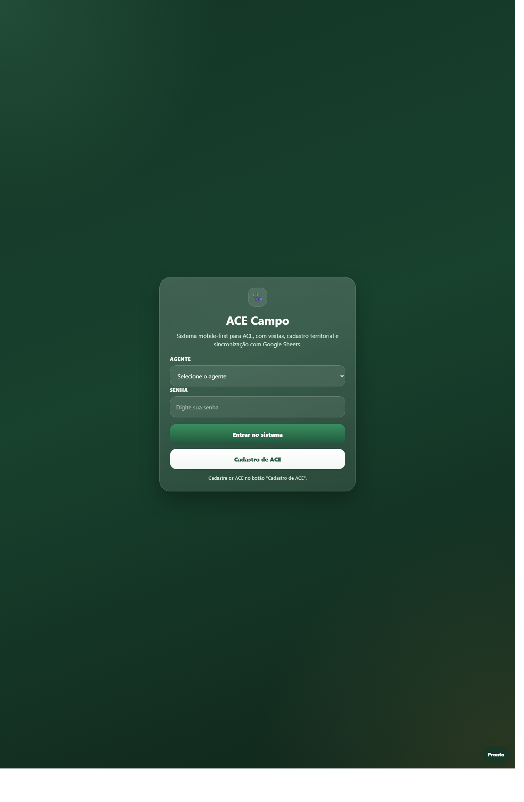
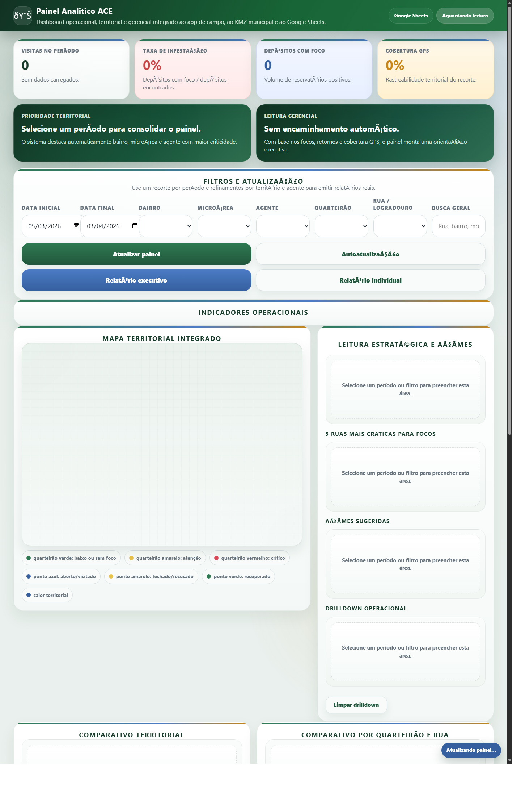
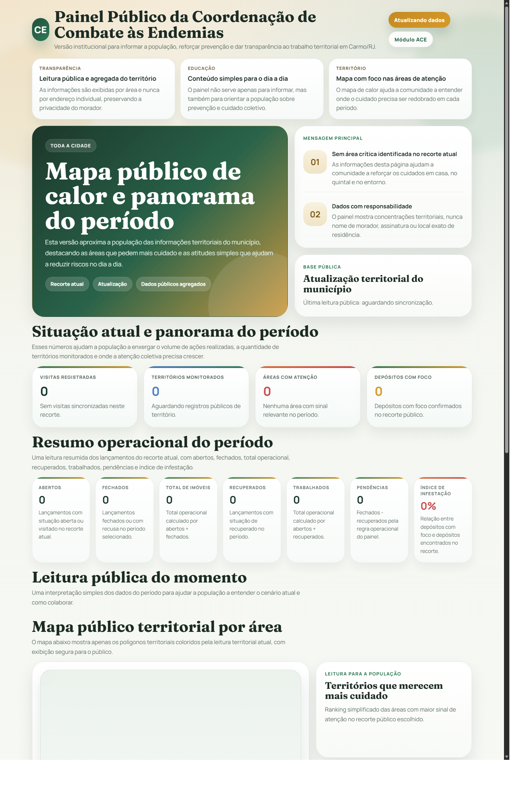

Não achou o imóvel
Cadastre o imóvel primeiro na aba Imóveis. Depois selecione esse imóvel para iniciar a visita.
Este manual foi feito para orientar de forma simples o uso do app do agente, do painel da coordenação e do painel público. A ideia é que qualquer pessoa consiga entender o fluxo sem precisar de conhecimento técnico.
O agente registra o trabalho no app, a coordenação acompanha no painel e a população visualiza o cenário geral da cidade no painel público.
Esta é a tela principal usada no celular ou tablet durante o trabalho de campo.

Os dados do morador, endereço, microárea e quarteirão já vêm do cadastro do imóvel. O agente não precisa digitar tudo de novo.
O foco do preenchimento é registrar o que foi encontrado e o que foi feito no local.
O painel da coordenação reúne indicadores, filtros e mapa territorial para orientar a ação da equipe.
Se uma microárea estiver com muitos fechados e poucas recuperações, a coordenação pode planejar retorno dirigido para aquela área.

O painel público é para informar a população sem expor morador, endereço ou dado privado.

Informar, educar e dar transparência ao trabalho da Coordenação de Combate às Endemias.
Respostas curtas para os problemas mais comuns do dia a dia.
Cadastre o imóvel primeiro na aba Imóveis. Depois selecione esse imóvel para iniciar a visita.
Verifique a permissão de localização do aparelho e tente capturar novamente com internet e GPS ativos.
O sistema pode continuar localmente. Depois, quando a conexão voltar, faça a sincronização.
Atualize a página. Se precisar, feche o app e abra novamente para puxar a versão mais recente.
Desenvolvido para uso simples, leitura rápida e apoio real ao trabalho em campo.